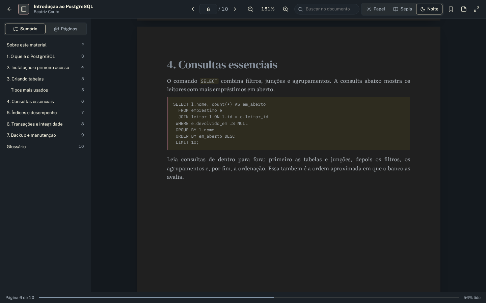
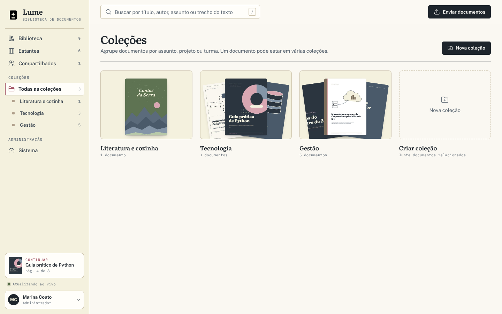
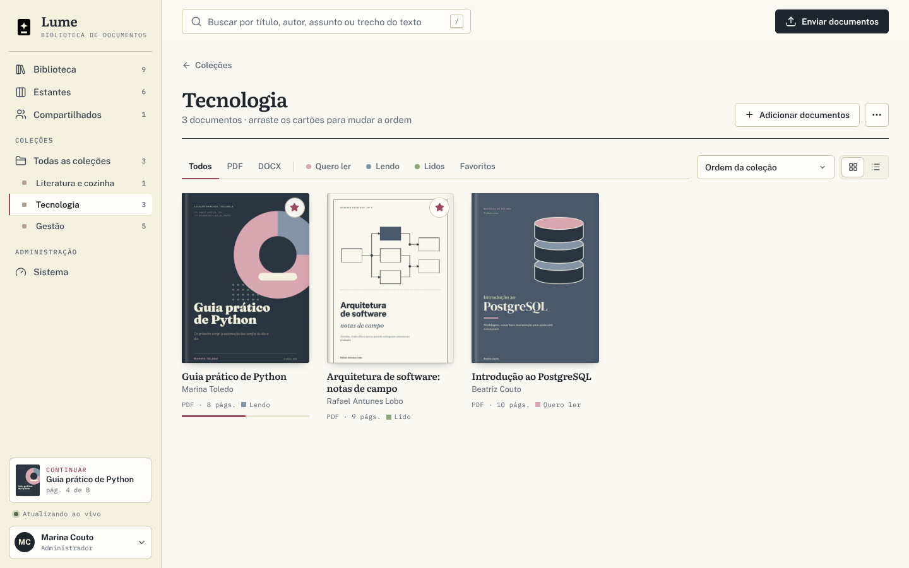
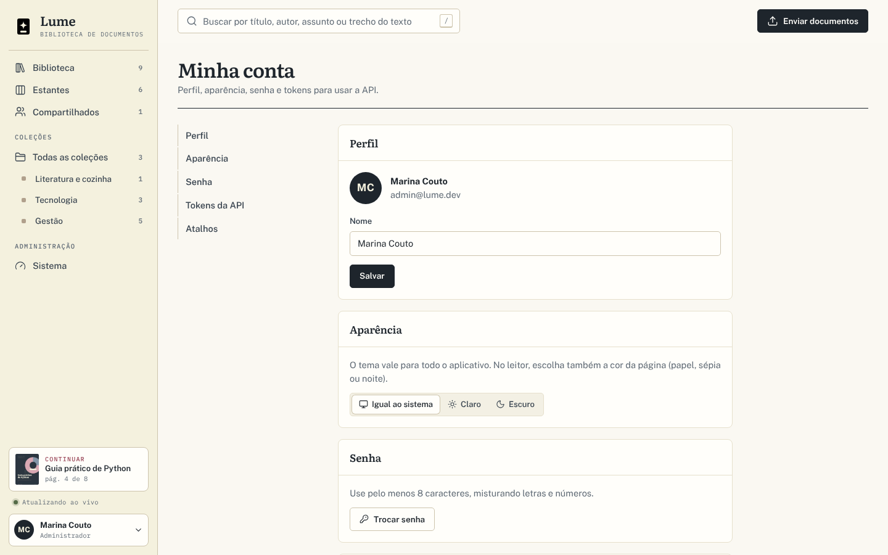
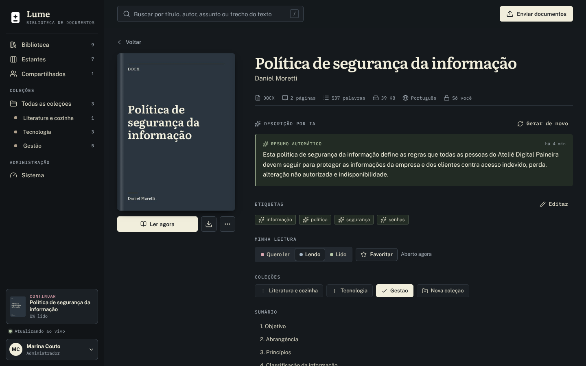

Convenções: código indica comandos, variáveis e rotas; Tecla indica atalhos de teclado; nomes em negrito são botões e rótulos da interface.
Capítulo 01
Visão rápida
O Lume em uma página: o que é, para quem foi feito e como as peças se encaixam.
O que é
Uma biblioteca digital auto-hospedada para PDF e DOCX. Cada arquivo enviado recebe capa, texto indexado, sumário, descrição e etiquetas geradas por IA, e abre em um leitor próprio que guarda a posição de leitura, os destaques e as notas de cada pessoa.
Para quem
Equipes que precisam reunir apostilas, manuais, relatórios, contratos e atas em um só lugar.
Quem quer uma estante pessoal de leitura no próprio computador ou servidor.
Desenvolvedores que desejam estudar ou adaptar uma aplicação Django com processamento assíncrono.
Do envio à leitura
01 · EnvioArraste PDF ou DOCX para a janela. Repetidos são reconhecidos pelo SHA-256.
02 · LeituraO processador Java extrai texto, sumário e metadados e gera a capa.
03 · DescriçãoO worker escreve a descrição e sugere até quatro etiquetas.
04 · ProntoO cartão se atualiza sozinho por WebSocket em todas as abas abertas.
05 · LeitorLeia, destaque, anote e continue de onde parou.
Como começar
Com Docker instalado, execute iniciar.cmd (Windows) ou ./iniciar.sh (Linux e macOS). O navegador abre em http://localhost:8080; entre com admin@lume.dev e a senha Lume@2026.
Busca sem acentos, com radicais e tolerância a erros no título.
Estantes Quero ler, Lendo e Lidos; coleções com ordem própria.
Temas Papel, Sépia e Noite no leitor; tema claro e escuro na interface.
Privacidade
Por padrão, a descrição é feita por um resumo extrativo local: nenhum trecho sai do servidor. Provedores externos (Claude ou APIs compatíveis com OpenAI) são opcionais. Cada documento é privado até que o dono o compartilhe com todos.
Capítulo 02
Visão geral
O Lume é uma plataforma web para organizar e ler documentos PDF e DOCX. Basta arrastar os arquivos para a janela: em poucos segundos, cada um ganha capa, descrição escrita por IA, sumário e um leitor que guarda a página onde você parou.
Para que serve
O Lume funciona como uma estante digital, no estilo do Scribd, instalada no seu computador ou no servidor da sua equipe. Apostilas, manuais internos, relatórios, contratos, livros técnicos e atas ficam reunidos em um só lugar, com busca no texto completo e um modelo de permissão simples: cada documento é privado ou fica visível, apenas para leitura, a todas as contas da instalação. O projeto pode ser usado como está, estudado ou adaptado.
Funcionalidades
Recurso
Descrição
Envio por arrastar e soltar
Vários arquivos de uma vez, com barra de progresso e a etapa de cada um em tempo real. Arquivos repetidos são reconhecidos pela impressão digital (SHA-256) e não ocupam espaço novamente.
Capas automáticas
No PDF, a capa é a primeira página renderizada (ou a segunda ou terceira, se a primeira estiver em branco). O DOCX recebe uma capa tipográfica com a paleta do projeto.
Prévia com descrição por IA
Ao parar o mouse sobre uma capa, uma prévia abre ao lado do cartão com a descrição, as etiquetas sugeridas e os botões de leitura.
Leitor próprio
PDF com pdf.js (zoom, miniaturas, sumário, busca, temas Papel, Sépia e Noite, modo foco) e DOCX convertido em HTML de leitura confortável. Destaques coloridos, notas e marcadores ficam salvos por pessoa.
Estantes, coleções e favoritos
Estantes Quero ler, Lendo e Lidos com arrastar e soltar; coleções com ordem própria; favoritos marcados pela estrela.
Busca em texto completo
Título, autor, descrição, etiquetas e todo o conteúdo, sem diferenciar acentos, com o trecho encontrado em destaque e tolerância a erros de digitação no título.
Tempo real
A tela se atualiza sozinha, por WebSocket, quando um documento muda de etapa, em qualquer aba aberta.
Administração
Painel com serviços, filas, falhas, provedor de IA e contas; API REST documentada, com tokens pessoais.
Tecnologias
Camada
Tecnologia
Papel
Aplicação web
Python 3.13 · Django 5.2 · Django REST Framework
Páginas, API REST, autenticação e regras da biblioteca
Tempo real
Django Channels · Uvicorn (ASGI) · WebSockets
Avisa o navegador quando um documento muda
Processamento
Java 21 · Apache PDFBox 3 · Gson
Lê PDF e DOCX; gera capa, texto, sumário e HTML de leitura
Interface
JavaScript (módulos ES, sem etapa de build) · pdf.js 5
Biblioteca, prévia, leitor, estantes e painéis
Banco de dados
PostgreSQL 16 · busca pt_unaccent · trigramas
Fonte da verdade de documentos, leituras e anotações
Filas e eventos
Redis 7 · Streams · pub/sub
Pipeline com retentativas, eventos, cache e sessões
IA
Resumo extrativo local · Claude · APIs compatíveis com OpenAI
Descrição e etiquetas de cada documento
Execução
Docker Compose
PostgreSQL, Redis, processor, web e worker
Testes
Pytest · pytest-django · pytest-asyncio
70 testes com PostgreSQL, Redis e o processador Java reais
Identidade visual 1.1.0
A versão 1.1.0 mantém a paleta original de cinco tons claros, mas passa a usá-la com intenção: cada cor tem um papel fixo. A marca continua sendo a Faísca, uma página com uma estrela de quatro pontas vazada (o documento que ganha descrição escrita por IA), sempre monocromática: preta no tema claro e branca no escuro.
Paleta de identidade
Creme#F4F1DEA “mesa”: barra lateral e fundos de apoio.
Camurça#B0A08CTom neutro de apoio para bordas e detalhes.
Sálvia#B8C9A9Etiqueta da estante Lidos.
Ardósia#8395A7Etiqueta da estante Lendo.
Rosé#D8A7B1Etiqueta da estante Quero ler.
Papéis de cor
Fundo de leitura#FAF8F2Área principal, mais clara que a mesa; superfícies quase brancas por cima.
Tinta#1E252CTexto e botão principal.
Rosé tinta#9C4A5BAssinatura: navegação ativa, progresso de leitura, anel de foco e links.
Sálvia escura#556B47Tudo o que vem da IA: rótulos, descrição e etiquetas sugeridas.
Tema escuro
Fundo #15191D
Texto #F1EEDC
Assinatura #E3A3B0
Tipografia em três vozes
Literata
Leitura e títulos
Serifada para títulos de página, nomes de documentos e o texto do leitor de DOCX.
Public Sans
Interface
Sem serifa para botões, menus, formulários e textos de apoio.
IBM Plex Mono
PDF · 214 PÁG.
Monoespaçada para metadados, contadores, rótulos de seção e atalhos. Nova na 1.1.0, auto-hospedada (licença OFL).
Melhorias de experiência
Cabeçalho da biblioteca com a data, uma saudação e um resumo com números reais: documentos, em leitura e em processamento.
Filtros como abas, com sublinhado na aba ativa e contadores ao lado de cada nome.
Capas com efeito de lombada e metadados em fonte monoespaçada, como numa ficha de catálogo.
Acabamento mais sóbrio: cantos menos arredondados e sombras mais discretas.
Acessibilidade: link “Pular para o conteúdo”, respeito a prefers-reduced-motion e contraste AA entre texto e fundo (veja o capítulo 05).
Capítulo 03
Instalação e execução
Com Docker, o Lume sobe com um único comando. Os scripts criam o arquivo de configuração com senhas aleatórias, constroem as imagens e abrem o navegador quando tudo estiver pronto.
Requisitos
Docker com Docker Compose (Docker Desktop no Windows e no macOS).
Cerca de 2 GB de memória livre e 2 GB de disco para as imagens, além do espaço ocupado pelos documentos.
Na primeira execução, acesso à internet para baixar as imagens base e as dependências do Python e do Maven.
Primeira execução
Windows
Na pasta do projeto, dê dois cliques em iniciar.cmd.
Linux ou macOS
./iniciar.sh
Os dois scripts executam as mesmas etapas:
Verificam se o Docker está instalado.
Na primeira vez, copiam .env.example para .env e substituem DB_PASSWORD e APP_SECRET_KEY por valores aleatórios.
Executam docker compose up -d --build, que sobe PostgreSQL, Redis, o processador Java, o servidor web e o worker.
Aguardam a rota /api/health responder e abrem http://localhost:8080.
Endereço
Conteúdo
http://localhost:8080
Aplicação: biblioteca, leitor e administração
http://localhost:8080/api/docs
Documentação interativa da API (Swagger)
http://localhost:8080/api/health
Saúde do banco e do Redis (usada pelo Docker)
Para subir sem o script:
cp .env.example .env # troque DB_PASSWORD e APP_SECRET_KEY
docker compose up -d --build
Contas de demonstração
Em um banco vazio, o Lume cria duas contas e importa os 12 documentos da pasta exemplos/ pelo mesmo pipeline de um envio normal. Os nomes, os e-mails (domínio de exemplo lume.dev) e os documentos são fictícios e servem apenas para testes.
Papel
E-mail
Senha
Permissões
Administrador
admin@lume.dev
Lume@2026
Tudo, inclusive a tela Sistema e a gestão de contas
Membro
leitor@lume.dev
Lume@2026
A própria biblioteca e os documentos compartilhados
AtençãoAs contas de demonstração usam senhas públicas. Em uma instalação real, desative-as com APP_SEED_DEMO=false antes da primeira subida (veja Instalação para uso real).
Comandos do dia a dia
Tarefa
Comando
Acompanhar os logs
docker compose logs -f web worker processor
Parar os serviços
docker compose down (os dados permanecem nos volumes)
Atualizar após baixar uma versão nova
docker compose up -d --build
Processar mais documentos em paralelo
docker compose up -d --scale worker=3
Abrir o terminal do Django
docker compose exec web python manage.py shell
Apagar tudo, inclusive os documentos
docker compose down -v
Instalação para uso real
No .env, defina APP_SEED_DEMO=false antes da primeira subida (ou apague os volumes com docker compose down -v).
Para impedir o cadastro aberto, defina APP_SIGNUP=false.
Suba os serviços com docker compose up -d --build.
Crie o administrador (a senha é solicitada no terminal):
Mesma pasta de dadosO web, o worker e o processador precisam enxergar a mesma pasta: DATA_ROOT (Python) e PROCESSOR_DATA_ROOT (Java) devem apontar para o mesmo lugar. No Docker, essa pasta é o volume documents, montado em /data.
Acesso pela rede e HTTPS
Variável
Quando ajustar
APP_ALLOWED_HOSTS
Acrescente o IP ou o domínio usado para abrir o Lume (ex.: 192.168.0.20,lume.suaempresa.com). Sem isso, o Django recusa a requisição e o WebSocket não conecta.
APP_HTTPS
true quando houver um proxy reverso com HTTPS na frente: os cookies passam a ser seguros e o HSTS é ativado.
APP_CSRF_TRUSTED_ORIGINS
Com HTTPS, a origem completa, por exemplo https://lume.suaempresa.com.
APP_PORT
Porta publicada no computador (padrão 8080).
Capítulo 04
Guia das telas
O que cada tela mostra e como usá-la. Todas funcionam nos temas claro e escuro e se adaptam ao celular.
Entrada
/entrar
Fig. 1 Tela de entrada, com o formulário de acesso e a opção de criar conta.
Entre com e-mail e senha. Se o cadastro estiver aberto (APP_SIGNUP=true), o link Criar conta alterna para o formulário de cadastro. Após cinco senhas erradas para o mesmo e-mail e IP, a entrada fica bloqueada por 15 minutos. O aviso com as contas de demonstração só aparece quando APP_SEED_DEMO=true.
Biblioteca
Tela inicial
Fig. 2 Biblioteca: cabeçalho com resumo, continuar lendo, filtros, ordenação e a grade de capas.
Cabeçalho: data, saudação e um resumo com os números reais da sua biblioteca (documentos, em leitura e em processamento).
Continuar lendo: os três últimos documentos abertos, com a página e a barra de progresso. Um clique abre o leitor no ponto exato.
Filtros: abas Todos, PDF, DOCX, Quero ler, Lendo, Lidos e Favoritos, com contadores. Quando há documentos nessas situações, aparecem também Processando e Com erro.
Ordenação: adicionados recentemente, lidos recentemente, título, autor, mais páginas ou maior tamanho (e “mais relevantes” durante uma busca).
Grade ou lista: o botão ao lado da ordenação alterna a visualização; a escolha fica lembrada no navegador.
Cartão: capa, título, autor, tipo e páginas, estante e progresso. A estrela marca o favorito. Arraste um cartão até uma coleção no menu lateral para incluí-lo nela.
Mais documentos são carregados automaticamente ao rolar a página.
Prévia ao passar o mouse
Pare o mouse sobre uma capa por um instante (ou chegue até ela com Tab): a prévia abre ao lado, com tipo, páginas, tamanho, a descrição por IA e quem a escreveu (resumo automático, Claude ou o modelo configurado), as etiquetas e os botões Ler agora (ou Continuar) e Detalhes. Enquanto o documento é processado, a prévia avisa que a descrição ainda vai chegar.
Envio de documentos
Atalho U
Fig. 3 Envio: os arquivos podem ser soltos em qualquer ponto da janela; a bandeja acompanha cada um.
Arraste PDFs e DOCX para a janela, clique em Enviar documentos ou pressione U.
A bandeja no canto mostra cada arquivo: Enviando (com porcentagem), Na fila, Lendo o documento, Escrevendo a descrição e Pronto.
O cartão aparece na biblioteca imediatamente, com um esqueleto animado no lugar da capa, que surge quando o processador termina.
Se o envio for feito dentro de uma coleção, o documento já entra nela.
LimitesAté 50 arquivos por envio e 200 MB por arquivo (APP_MAX_UPLOAD_MB). O tipo é verificado pelo conteúdo, não pela extensão: um .txt renomeado para .pdf é recusado. Arquivos .doc do Word 97–2003 também são recusados; abra-os no Word e salve como .docx.
Busca
Atalho /
Fig. 4 Resultado de uma busca: os trechos encontrados aparecem marcados nos cartões.
A caixa no topo pesquisa título, autor, descrição, etiquetas e o texto completo dos documentos. Acentos e maiúsculas não importam (“decisoes tecnicas” encontra “decisões técnicas”), palavras derivadas também são reconhecidas (“tabelas” encontra “tabela”) e pequenos erros de digitação no título são tolerados.
Sintaxe
Efeito
banco de dados
Documentos com todos os termos, em qualquer ordem
"banco de dados"
Frase exata
contrato -rascunho
Exclui os documentos que contêm a palavra precedida de hífen
Detalhe do documento
/documento/{id}
Fig. 5 Detalhe: capa, ações, descrição por IA, etiquetas, leitura, coleções e sumário.
Ação
Onde
O que faz
Ler agora / Continuar lendo
Botão sob a capa
Abre o leitor na página salva
Baixar
Ícone de download
Baixa o arquivo original
Editar informações
Menu ⋯
Título, autor e descrição própria. A partir daí, a leitura do arquivo não sobrescreve mais título e autor.
Compartilhar com todos / Só para mim
Menu ⋯
Torna o documento visível (só leitura) para todas as contas, ou volta a deixá-lo privado
Ler o arquivo de novo
Menu ⋯
Reenvia ao processador (útil depois de atualizar o Lume)
Gerar de novo
Bloco da descrição
Solicita outra descrição, por exemplo após trocar o provedor de IA
Etiquetas
Editar
Suas etiquetas substituem as sugeridas pela IA
Minha leitura
Quero ler · Lendo · Lido · Favoritar
Move entre estantes e marca o favorito
Coleções
Chips
Inclui ou retira o documento de cada coleção; cria uma nova
Sumário
Lista
Cada item abre o leitor diretamente naquela parte
Excluir
Menu ⋯
Apaga o documento, os arquivos, as anotações e o progresso
Documentos de outras pessoas (compartilhados) mostram quem os enviou e não podem ser editados; anotações e progresso de leitura continuam sendo seus.
Leitor de PDF
pdf.js 5
Fig. 6 Leitor de PDF com o painel de sumário à esquerda e o painel de anotações à direita.
Recurso
Como usar
Páginas
Rolagem contínua; campo de página, setas ←→, Page UpPage Down, HomeEnd
Zoom
Botões − e +, teclas + e −; clique na porcentagem para voltar a ajustar à largura
Sumário e miniaturas
Botão do painel esquerdo; abas Sumário e Páginas
Busca no documento
Caixa “Buscar no documento” ou CtrlF; Enter vai ao próximo resultado, ShiftEnter ao anterior
Temas da página
Papel, Sépia e Noite (a escolha fica salva na sua conta)
Destaques
Selecione um trecho e escolha uma das quatro cores (Sálvia, Rosé, Ardósia, Camurça); também é possível anotar ou copiar
Notas e marcadores
Painel direito: nota na página atual (CtrlEnter salva) e ícone de marcador no topo
Modo foco
Ícone de tela cheia ou F; Esc sai do foco e, pressionado de novo, do leitor
Progresso
Salvo automaticamente ao trocar de página e ao sair; o documento passa para “Lendo”
O PDF é baixado em partes (requisições Range): arquivos grandes começam a aparecer antes do fim do download, e apenas as páginas próximas da área visível ficam renderizadas na memória.

Fig. 7 Tema Noite da página, com o painel de miniaturas aberto.
Leitor de DOCX
HTML de leitura
Fig. 8 DOCX convertido em HTML de leitura, com o sumário montado a partir dos títulos.
O processador Java converte o DOCX em HTML limpo, preservando títulos, listas, tabelas, citações, links e imagens. O tamanho da letra é ajustado com os botões A− e A+ (ou + e −). O progresso é salvo pela posição do parágrafo; destaques, notas, marcadores, busca e temas funcionam como no PDF.
Estantes
Quero ler · Lendo · Lidos
Fig. 9 Estantes: arraste um documento de uma coluna para outra.
Três colunas, identificadas pelas etiquetas de catálogo: Quero ler (Rosé), Lendo (Ardósia) e Lidos (Sálvia). Arraste os cartões entre elas. Abrir um documento no leitor já o coloca em Lendo; marcá-lo como lido registra a data de conclusão.
Coleções
Ordem própria

Fig. 10 Lista de coleções, cada uma representada pelas capas dos seus documentos.

Fig. 11 Dentro de uma coleção: adicione documentos e arraste os cartões para mudar a ordem.
Nova coleção: botão no topo da tela ou no próprio documento.
Adicionar documentos: dentro da coleção, escolha numa lista; ou arraste o cartão até o nome da coleção no menu lateral.
Reordenar: com a ordenação “Ordem da coleção”, arraste os cartões.
Renomear e excluir: menu ⋯ da coleção. Excluir a coleção não apaga os documentos.
Compartilhados
Reúne os documentos que outras pessoas deixaram visíveis para todos, com o nome de quem os enviou. Você pode ler, anotar, favoritar e colocá-los nas suas estantes e coleções.
Sistema
Só administradores
Fig. 12 Sistema: números, serviços, contas e últimas etapas processadas.
Números: documentos e espaço usado, prontos, com erro, etapas nas últimas 24 h e tempo médio de leitura e de descrição.
Serviços: processador Java (versão do PDFBox, vagas ocupadas, tempo médio), workers online, filas do Redis e provedor de IA.
Documentos com erro: o motivo de cada falha e o botão Tentar todos de novo.
Contas: criar, editar o papel, desativar e trocar a senha.
Últimas etapas: cada tentativa de leitura e de descrição, com duração e erro. A tela se atualiza sozinha.
Minha conta
Perfil · tokens · atalhos

Fig. 13 Minha conta: perfil, aparência, senha, tokens da API e atalhos de teclado.
Altere o nome, o tema (igual ao sistema, claro ou escuro) e a senha. Em Tokens da API, crie tokens para scripts: o valor aparece uma única vez e apenas o hash fica armazenado. Cada conta pode ter até 20 tokens ativos. A seção Atalhos lista os atalhos de teclado descritos no capítulo 05.
Tema escuro e celular
Claro · escuro · móvel
Fig. 14 Biblioteca no tema escuro, que segue o sistema ou a escolha feita em Minha conta.

Fig. 15 Detalhe do documento no tema escuro.Fig. 16 No celular, o menu lateral vira gaveta.
Capítulo 05
Teclado e acessibilidade
O Lume pode ser usado inteiramente pelo teclado. Este capítulo reúne os atalhos implementados e os cuidados de acessibilidade da interface.
Atalhos de teclado
Os atalhos globais e os do leitor não são acionados enquanto o foco está em um campo de texto. No macOS, ⌘ substitui Ctrl.
Em qualquer tela
Tecla
Ação
/
Leva o foco para a caixa de busca
U
Abre a seleção de arquivos para envio
Enter na busca
Fora da biblioteca, abre a biblioteca com o resultado da busca
Esc na busca
Sai da caixa de busca
Esc
Fecha janelas de diálogo e menus abertos
Enter em um diálogo
Confirma a ação principal quando o foco está num campo
Enter na lista
Abre o documento da linha selecionada (visualização em lista)
No leitor
Tecla
Ação
→ ou Page Down
Próxima página (PDF)
← ou Page Up
Página anterior (PDF)
Home · End
Primeira · última página (PDF)
+ · −
Zoom (PDF) ou tamanho da letra (DOCX)
F
Liga ou desliga o modo foco
Esc
Sai do modo foco; pressionado de novo, fecha o leitor
CtrlF
Busca dentro do documento
Enter · ShiftEnter
Próximo · resultado anterior da busca
Esc na busca do documento
Limpa a busca e devolve o foco à página
Enter no campo de página
Vai para a página digitada
CtrlEnter na nota
Salva a nota
Acessibilidade
Aspecto
Como o Lume atende
Navegação por teclado
Todos os controles são alcançáveis com Tab; a prévia dos cartões também abre pelo foco do teclado.
Pular para o conteúdo 1.1.0
Primeiro item da página, visível ao receber foco, leva direto à área principal sem percorrer o menu lateral.
Foco visível
Anel de foco contínuo em :focus-visible, na cor de assinatura Rosé tinta a partir da 1.1.0, inclusive nas capas.
Contraste 1.1.0
Texto e controles com contraste mínimo AA (WCAG) nos temas claro e escuro, com texto em tinta escura sobre fundos claros.
Movimento reduzido
Com prefers-reduced-motion: reduce, animações e transições são praticamente eliminadas e as transições entre páginas são desativadas.
Leitores de tela
Avisos (toasts) em região role="status" com aria-live="polite"; janelas com role="dialog" e aria-modal; menus com role="menu"; grupos de opções (tema, estante, cor da página) rotulados com aria-label.
Leitura confortável
Temas Papel, Sépia e Noite, tamanho de letra ajustável no DOCX e modo foco sem distrações.
Capítulo 06
Descrição por IA
Cada documento recebe uma descrição de duas ou três frases e até quatro etiquetas. O provedor é escolhido no .env e pode ser trocado a qualquer momento.
Provedores
AI_PROVIDER
Como funciona
O que configurar
local (padrão)
Resumo extrativo feito no próprio worker: escolhe as frases mais representativas (frequência de termos, peso do título e dos títulos de seção, posição, corte de redundância) e extrai palavras-chave. Não envia nada para fora e não precisa de chave.
Nada.
anthropic
API de Mensagens da Anthropic (Claude).
AI_API_KEY; AI_MODEL é opcional (padrão claude-haiku-5-5).
openai
Qualquer API compatível com /v1/chat/completions: OpenAI, Ollama, LM Studio, OpenRouter e outras.
AI_MODEL (obrigatório), AI_BASE_URL (padrão da OpenAI) e AI_API_KEY quando o serviço exigir.
docker compose --profile ia-local up -d
docker compose exec ollama ollama pull llama3.2
# no .env
AI_PROVIDER=openai
AI_BASE_URL=http://ollama:11434/v1
AI_MODEL=llama3.2
Depois de alterar o .env, aplique com docker compose up -d. Os documentos já descritos permanecem como estão; use Gerar de novo no detalhe do documento para refazer a descrição.
Dados enviados ao provedor
Somente o necessário para a descrição: título, autor, tipo, número de páginas, até 30 títulos do sumário e um trecho do texto já limpo (sem capa e sem cabeçalhos e rodapés repetidos) de até AI_MAX_INPUT_CHARS caracteres (padrão 12 000), composto por três quartos do início e um quarto do meio do documento. O pedido exige resposta em JSON, com a descrição em português e as etiquetas.
Documentos confidenciaisCom anthropic ou openai, esse trecho sai do seu servidor. Para documentos sigilosos, mantenha o provedor local ou use um modelo executado na sua própria rede (Ollama).
Falhas do provedor
Se a API externa demorar mais que AI_TIMEOUT (60 s), responder com erro, retornar sem JSON ou com uma descrição vazia, o worker usa imediatamente o resumo local: o documento fica pronto do mesmo jeito e o motivo aparece em Sistema → Últimas etapas. Documentos sem texto (PDF digitalizado como imagem) recebem um aviso no lugar da descrição. As etiquetas sugeridas pela IA nunca apagam as que você escolheu.
Como identificar a origemNa prévia e no detalhe, a descrição informa quem a escreveu: resumo automático, Claude ou o modelo configurado. Tudo o que vem da IA aparece em Sálvia escura.
Capítulo 07
Arquitetura
Cinco serviços no Docker Compose. O PostgreSQL guarda o estado; o Redis distribui o trabalho e os avisos; o processador Java não acessa o banco e apenas lê e grava arquivos.
Serviços
Serviço
Comando
Responsabilidade
postgres
imagem oficial 16
Documentos, contas, leituras, anotações, coleções e histórico do processamento
redis
imagem oficial 7, AOF ligado
Filas (Streams), retentativas, eventos (pub/sub), cache, sessões e bloqueio de login
processor
java -jar processor.jar
API HTTP interna (porta 8090): lê PDF e DOCX; gera capa, texto, sumário e HTML
web
./start.sh (migrações + Uvicorn)
Páginas, API REST, WebSocket, arquivos estáticos e envio
worker
python manage.py worker
Consome as filas, chama o processador, escreve a descrição e recupera falhas
O caminho de um documento
Envio. O web confere tamanho e tipo pelo conteúdo, calcula o SHA-256 enquanto grava, recusa repetidos e salva o arquivo em /data/documents/<id>/original.pdf. Cria o documento no estado Na fila e, só depois do commit, publica no stream docs:extract.
Leitura. Um worker assume a mensagem (XREADGROUP), marca Lendo o documento com SELECT … FOR UPDATE SKIP LOCKED e chama POST /v1/process no processador.
Processador Java. Para PDF: metadados, número de páginas, texto (páginas separadas por quebra de página), sumário pelos marcadores e capa da primeira página não vazia. Para DOCX: lê o pacote com StAX, gera reader.html, extrai imagens, monta o sumário pelos títulos e desenha a capa tipográfica.
Gravação. O worker higieniza o HTML novamente, guarda metadados, texto e sumário, atualiza o índice de busca e publica em docs:describe.
Descrição. O worker gera descrição, idioma e etiquetas, marca Pronto e publica o evento.
Tempo real. A cada mudança, um aviso vai para o canal events:user:<id> (e events:shared, se o documento for compartilhado); o web o entrega pelo WebSocket e o navegador busca o documento atualizado.
Filas, retentativas e recuperação
Situação
Comportamento
Streams docs:extract e docs:describe
Grupo de consumidores workers; cada worker tem WORKER_THREADS linhas de execução e só confirma (XACK) depois de terminar.
Mensagem repetida
A etapa só começa se o documento estiver no estado esperado; uma mensagem duplicada ou atrasada não tem efeito.
Erro passageiro
Processador fora do ar, falha de rede ou resposta 503: nova tentativa com espera exponencial (5 s, 15 s, 45 s, até 300 s), registrada no ZSET docs:delayed. Depois de PIPELINE_MAX_ATTEMPTS (4), o documento fica Falhou.
Arquivo recusado
PDF com senha, arquivo corrompido ou formato inválido (resposta 422): falha imediata, com o motivo em português, sem consumir tentativas.
Worker interrompido
Mensagens paradas há mais de PIPELINE_VISIBILITY_TIMEOUT (600 s) são reassumidas com XAUTOCLAIM.
Redis apagado
Os grupos são recriados automaticamente e a varredura devolve à fila os documentos parados há mais de PIPELINE_STALE_AFTER (1 800 s). Nada se perde: o estado está no PostgreSQL.
Batimento
Cada worker grava workers:<nome> a cada 5 s, com validade de 30 s; é essa informação que a tela Sistema exibe.
Tempo limiteO worker espera o processador por até PROCESSOR_TIMEOUT (300 s), menos que o tempo para reassumir uma mensagem (600 s). Assim, um documento muito grande nunca é processado por dois workers ao mesmo tempo.
Segurança
Camada
Proteção
Navegador
Content-Security-Policy sem scripts inline, X-Frame-Options: DENY, nosniff, Referrer-Policy e Permissions-Policy; HSTS com APP_HTTPS=true.
Contas
Senhas com PBKDF2 e validadores do Django; bloqueio de 15 min após 5 erros por IP e e-mail; CSRF em todo POST com sessão; sessão de 14 dias com cookie HttpOnly.
Tokens da API
Formato dl_<prefixo>_<segredo>; apenas o SHA-256 é armazenado; podem expirar e ser revogados.
Envio
Tipo verificado pelo conteúdo, limite de tamanho por arquivo e por envio, arquivo temporário apagado em qualquer erro.
Arquivos
Servidos apenas pela API, com checagem de permissão; nomes de mídia validados; suporte a Range e ETag.
Processador Java
Sem acesso a banco ou Redis; PathGuard impede sair de /data; XML lido com StAX sem DTD nem entidades externas (XXE); limites contra zip-bomb (10 000 entradas, 64 MB por XML, 512 MB no total); PDFBox com cache em arquivo temporário; fila de capacidade com resposta 503.
HTML de leitura
Gerado com lista restrita no Java e higienizado novamente com nh3 (apenas tags e atributos permitidos; links http, https e mailto com noopener).
Busca
Trechos encontrados são escapados antes de virar HTML.
Estrutura de pastas
Document-Library-Platform/
├── docker-compose.yml serviços, volumes e perfil ia-local
├── .env.example todas as configurações (sem segredos)
├── iniciar.cmd · iniciar.sh primeira execução em um comando
├── web/ aplicação Python
│ ├── config/ settings, rotas, ASGI
│ ├── apps/
│ │ ├── accounts/ contas, tokens, bloqueio de login
│ │ ├── library/ documentos, busca, estantes, coleções, anotações
│ │ ├── processing/ filas, worker, etapas, cliente do processador
│ │ ├── ai/ resumo local e provedores externos
│ │ ├── realtime/ WebSocket e distribuidor de eventos
│ │ └── core/ arquivos com Range, eventos, segurança
│ ├── templates/ · static/ páginas, CSS, JavaScript, fontes, pdf.js
│ └── tests/ Pytest
├── processor/ serviço Java (Maven)
│ └── src/main/java/io/github/havelroot/processor/
│ └── http/ · pdf/ · docx/ · cover/
├── exemplos/ 12 documentos fictícios + manifest.json
├── docs/ imagens, fontes HTML e cópias dos PDFs
└── .github/workflows/ ci.yml e diario.yml
Capítulo 08
API REST
Tudo o que a interface faz está disponível na API. A documentação interativa, gerada a partir do código, fica em /api/docs (Swagger), e o esquema OpenAPI em /api/schema.
Autenticação
No navegador: a sessão criada na tela de entrada. Pedidos que alteram dados levam o cabeçalho X-CSRFToken com o valor do cookie csrftoken.
Em scripts: crie um token em Minha conta e envie Authorization: Bearer dl_…. Tokens não precisam de CSRF.
Rotas principais
As rotas de documento abaixo são relativas a /api/v1.
Método
Rota
Finalidade
GET
/api/v1/documents
Lista, com q, scope (mine, shared, all), kind, status, shelf, favorite, collection, tag, sort, page e page_size
POST
/api/v1/documents
Envio multipart: campo files (repetido), visibility e collection
GET · PATCH · DELETE
/api/v1/documents/{id}
Detalhe; edição de título, autor, descrição e visibilidade; exclusão
GET
/documents/{id}/file
Arquivo original (Range; ?download=1 força o download)
GET
/documents/{id}/cover
Capa em JPEG
GET
/documents/{id}/reader
HTML de leitura (DOCX) e sumário
POST
/documents/{id}/reprocess · /describe
Ler o arquivo de novo · gerar a descrição de novo
PUT
/documents/{id}/tags
Etiquetas do usuário
GET · PUT · PATCH
/documents/{id}/reading
Estante, página, progresso, posição e favorito
POST
/documents/{id}/open
Registra a abertura no leitor
GET · POST
/documents/{id}/annotations
Destaques, notas e marcadores (PATCH e DELETE em /annotations/{id})
GET · POST
/api/v1/collections
Coleções (GET, PATCH e DELETE em /{id}; POST /{id}/documents; PUT /{id}/order)
GET
/api/v1/tags · /api/v1/stats
Etiquetas com contagem · números do menu lateral
GET · PATCH
/api/v1/me
Perfil, tema e preferências do leitor (senha em /me/password, tokens em /me/tokens)
GET
/api/v1/system
Administração: filas, workers, processador, IA e falhas
Os erros seguem sempre o mesmo formato, com a mensagem em português:
{"error": "invalid_credentials", "message": "E-mail ou senha incorretos."}
Código
Quando ocorre
400
Dados inválidos (com fields indicando cada campo) ou arquivo recusado
401 · 403
Sem sessão ou token · sem permissão (ex.: editar documento de outra pessoa)
404
Recurso inexistente ou não visível para você
409
Conflito (ex.: gerar descrição de um documento ainda em processamento)
429
Muitas tentativas de entrada
Capítulo 09
Configuração
Toda a configuração é feita por variáveis de ambiente no arquivo .env. Os valores abaixo são os padrões aplicados quando a variável fica vazia.
Aplicação
Variável
Padrão
Finalidade
APP_PORT
8080
Porta usada no navegador
APP_SECRET_KEY
—
Chave secreta do Django (gerada pelo script)
APP_ALLOWED_HOSTS
localhost,127.0.0.1
Endereços aceitos
APP_HTTPS
false
Cookies seguros e HSTS atrás de proxy HTTPS
APP_CSRF_TRUSTED_ORIGINS
—
Origens confiáveis com HTTPS
APP_SEED_DEMO
true
Contas e documentos de demonstração num banco vazio
APP_SIGNUP
true
Cadastro aberto na tela de entrada
APP_MAX_UPLOAD_MB
200
Tamanho máximo por arquivo
APP_MAX_FILES_PER_UPLOAD
50
Arquivos por envio
APP_TIMEZONE
America/Sao_Paulo
Fuso horário das datas
APP_LOG_LEVEL
INFO
Nível de detalhe dos logs
APP_DEBUG
false
Somente para desenvolvimento
WEB_WORKERS
2
Processos do Uvicorn
Banco, Redis e arquivos
Variável
Padrão
Finalidade
DB_NAME · DB_USER
lume
Banco e usuário do PostgreSQL
DB_PASSWORD
—
Senha do PostgreSQL (gerada pelo script)
DB_HOST · DB_PORT
postgres · 5432
Endereço do banco (a porta também é publicada, apenas em 127.0.0.1)
REDIS_URL
redis://redis:6379/0
Endereço do Redis
DATA_ROOT
/data
Pasta dos documentos (volume compartilhado)
Pipeline e IA
Variável
Padrão
Finalidade
WORKER_THREADS
2
Documentos processados ao mesmo tempo por worker
PROCESSOR_URL
http://processor:8090
Endereço do processador
PROCESSOR_TIMEOUT
300
Espera máxima por documento (s)
PIPELINE_MAX_ATTEMPTS
4
Tentativas antes de marcar Falhou
PIPELINE_VISIBILITY_TIMEOUT
600
Segundos até reassumir a mensagem de um worker interrompido
PIPELINE_STALE_AFTER
1800
Segundos até a varredura devolver um documento parado
AI_PROVIDER
local
local, anthropic ou openai
AI_API_KEY
—
Chave do provedor externo
AI_MODEL
claude-haiku-5-5 (anthropic)
Modelo usado
AI_BASE_URL
API oficial
Outro endereço compatível (Ollama, LM Studio…)
AI_TIMEOUT
60
Espera pela resposta da IA (s)
AI_MAX_INPUT_CHARS
12000
Tamanho do trecho enviado
Processador Java
Variável
Padrão
Finalidade
PROCESSOR_PORT
8090
Porta HTTP interna
PROCESSOR_DATA_ROOT
/data
Raiz dos arquivos (nada fora dela é lido)
PROCESSOR_CONCURRENCY
2
Documentos lidos ao mesmo tempo
PROCESSOR_ACQUIRE_TIMEOUT
60
Espera por uma vaga antes de responder 503 (s)
PROCESSOR_MAX_TEXT_CHARS
2000000
Limite do texto extraído
PROCESSOR_LOG_LEVEL
INFO
DEBUG, INFO, WARN ou ERROR
Checklist para produção
Senha do banco e APP_SECRET_KEY longas e aleatórias (os scripts já as geram); o .env nunca vai para o Git.
APP_SEED_DEMO=false e, se for o caso, APP_SIGNUP=false.
HTTPS em um proxy reverso (Nginx, Caddy, Traefik) com APP_HTTPS=true, APP_ALLOWED_HOSTS e APP_CSRF_TRUSTED_ORIGINS; o proxy precisa repassar o WebSocket em /ws/.
Backup diário do PostgreSQL (pg_dump) e do volume documents, sempre os dois juntos.
Quantidade de workers e PROCESSOR_CONCURRENCY ajustados à CPU; acompanhe a tela Sistema.
Para IA externa com documentos sensíveis, prefira um modelo executado na sua rede.
Capítulo 10
Testes e automação
Os testes rodam contra PostgreSQL e Redis reais, e os testes de ponta a ponta usam o processador Java compilado.
Pytest
cd web
pip install -r requirements-dev.txt
export DB_NAME=lume DB_USER=lume DB_PASSWORD=...
python -m pytest
São 70 testes, com cobertura em torno de 90%:
Arquivo
Cobertura
test_accounts.py
Entrada, bloqueio após 5 erros, CSRF, cadastro, senha, tokens e administração de contas
test_upload.py
Envio, detecção pelo conteúdo, repetidos, arquivos inválidos, limite de tamanho, coleção e visibilidade
test_documents.py
Privacidade, compartilhamento, edição, busca sem acento e com trechos, filtros, leitura, anotações, coleções, Range e exclusão
test_pipeline.py
Etapas, mensagens repetidas, recusa, retentativas com espera, higienização do HTML, recuperação e Redis apagado
test_ai.py
Resumo local, idioma, etiquetas, Claude e APIs compatíveis simulados, fallback e chave nunca exposta
test_realtime.py
WebSocket: recusa sem login, eventos próprios e compartilhados
test_system.py
Saúde, tela Sistema e esquema OpenAPI
test_e2e_processor.py
PDF, DOCX e PDF corrompido passando pelo processador Java real
IsolamentoOs testes usam um banco próprio, criado pelo pytest-django, e o banco 15 do Redis (altere com TEST_REDIS_URL), limpo a cada teste. O banco do Redis usado pela aplicação nunca é tocado.
Sem o processador em execução, esses quatro testes são pulados.
Integração contínua
O workflow .github/workflows/ci.yml é executado a cada push, em pull requests e uma vez por dia: compila o processador com Maven, sobe PostgreSQL e Redis como serviços, roda o Pytest completo (inclusive os testes de ponta a ponta com o jar recém-compilado) e constrói as imagens Docker.
Atividade diária
O workflow .github/workflows/diario.yml faz dois commits discretos por dia, registrando uma linha no arquivo .github/atividade.txt (que guarda apenas as últimas 60 linhas). Commits de atividade não disparam o CI.
Turno
Horário (Brasília)
Reserva, se o primeiro falhar
1º turno
11:34
12:56
2º turno
21:12
22:43
No GitHub, abra Settings → Secrets and variables → Actions.
Crie os secrets GIT_NAME (seu nome no GitHub) e GIT_EMAIL (o e-mail noreply do GitHub, para não expor o pessoal).
Em Actions → Atividade diária → Run workflow, execute uma vez para testar.
Se o turno já tiver sido registrado no dia, a execução reserva termina sem novo commit. O push é tentado três vezes, com git pull --rebase entre as tentativas.
Capítulo 11
Solução de problemas
Sintomas mais comuns, a causa provável e a correção. Em caso de dúvida, comece pela tela Sistema e por docker compose logs.
Sintoma
Causa provável
Solução
“port is already allocated” ao subir
Outra aplicação usa a porta 8080 ou 5432
Altere APP_PORT ou DB_PORT no .env e execute docker compose up -d
A página não abre em outro computador
Endereço fora de APP_ALLOWED_HOSTS
Acrescente o IP ou o domínio e reinicie o web
Documento fica em “Falhou”
Arquivo recusado ou tentativas esgotadas
Veja o motivo no detalhe ou em Sistema; use “Ler o arquivo de novo”
“PDF protegido por senha”
PDF com senha de abertura
Remova a senha em um leitor de PDF e envie novamente
“.doc antigos não são suportados”
Formato do Word 97–2003
Abra no Word e salve como .docx
Documentos parados em “Na fila”
Worker ou processador fora do ar
docker compose ps e depois docker compose logs worker processor; quando voltarem, a fila anda sozinha
Sistema mostra “Processador fora do ar”
Contêiner parado ou sem memória
docker compose restart processor; documentos muito grandes exigem mais memória
IA com “Falta configurar”
Provedor externo sem chave ou sem modelo
Preencha AI_API_KEY / AI_MODEL ou volte para AI_PROVIDER=local
Descrição em “Resumo automático” apesar da IA externa
A API falhou e o resumo local entrou no lugar
Veja o erro em Sistema → Últimas etapas e use “Gerar de novo”
Redis apagado ou reiniciado sem dados
Filas perdidas
Nenhuma ação necessária: os grupos são recriados e a varredura recoloca os documentos na fila
“Permission denied” em /data
Volume criado por outro usuário
As imagens usam UID/GID 10001; ajuste com chown -R 10001:10001 no volume
“Reconectando…” no menu
WebSocket bloqueado pelo proxy
Libere o upgrade de conexão em /ws/ no proxy reverso
Capa de um PDF ficou em branco
Primeiras páginas vazias ou só com imagem transparente
O processador tenta as 3 primeiras; reenviar não muda o resultado. Edite o PDF se quiser outra capa
Diagnóstico rápidocurl http://localhost:8080/api/health confirma se o banco e o Redis respondem. A tela Sistema mostra, em um só lugar, o estado do processador, dos workers, das filas e do provedor de IA.
Capítulo 12
Referência
Termos usados neste manual, componentes de terceiros incluídos no projeto e o histórico de versões.
Glossário
Coleção
Agrupamento de documentos criado pelo usuário, com ordem própria. Excluí-la não apaga os documentos.
Compartilhado
Documento visível, apenas para leitura, a todas as contas da instalação.
Estante
Situação de leitura de um documento para cada pessoa: Quero ler, Lendo ou Lidos.
Etiqueta
Palavra-chave de um documento; sugerida pela IA ou definida pelo usuário, que tem prioridade.
Etapa
Cada fase do pipeline: Na fila, Lendo o documento, Escrevendo a descrição, Pronto ou Falhou.
Faísca
A marca do Lume: uma página com uma estrela de quatro pontas vazada.
HTML de leitura
Versão do DOCX convertida pelo processador Java e higienizada, exibida no leitor.
Pipeline
Sequência assíncrona que leva o documento do envio ao estado Pronto, conduzida pelo worker.
Processador
Serviço Java 21 com PDFBox que extrai texto, sumário e metadados e gera capas.
Range
Requisição HTTP de parte de um arquivo; permite abrir PDFs grandes antes do fim do download.
Resumo extrativo
Descrição formada por frases do próprio documento, gerada localmente pelo provedor local.
SHA-256
Impressão digital do arquivo, usada para reconhecer envios repetidos.
Stream
Estrutura do Redis usada como fila de mensagens com grupos de consumidores.
Token da API
Credencial pessoal no formato dl_… para scripts; apenas o hash é armazenado.
Worker
Processo Python que consome as filas, chama o processador e escreve a descrição.
WebSocket
Conexão permanente com o navegador, usada para os avisos em tempo real.
Componentes de terceiros
O Lume inclui ou depende de componentes com licenças próprias, que continuam valendo para cada um deles.
Componente
Uso no projeto
Licença
pdf.js
Renderização de PDF no leitor
Apache-2.0
Apache PDFBox
Serviço Java de capas, texto e sumário
Apache-2.0
Django
Back-end web
BSD-3-Clause
Lucide
Ícones da interface
ISC
Public Sans
Fonte da interface
SIL Open Font License 1.1
Literata
Fonte de títulos e de leitura
SIL Open Font License 1.1
IBM Plex Mono 1.1.0
Fonte de metadados, contadores, rótulos e atalhos (web/static/fonts/OFL-IBMPlexMono.txt)
SIL Open Font License 1.1
Pytest
Testes automatizados
MIT
PostgreSQL e Redis rodam como serviços externos via Docker e não são redistribuídos no repositório; cada um segue a licença da própria imagem. Os documentos enviados pelos usuários pertencem aos seus autores e não são cobertos pela licença do projeto.
Histórico de versões
1.1.0Outubro de 2026 · versão atual
Nova identidade visual: Creme como mesa, fundo de leitura mais claro, tinta escura #1E252C e Rosé tinta #9C4A5B como cor de assinatura; Sálvia escura para tudo o que vem da IA; tema escuro revisto.
Tipografia em três vozes, com a nova IBM Plex Mono auto-hospedada.
Biblioteca com cabeçalho de resumo, filtros em abas com contadores e capas com efeito de lombada.
Cantos menos arredondados e sombras mais discretas.
Acessibilidade: link “Pular para o conteúdo”, respeito a prefers-reduced-motion e contraste AA.
Manual técnico reescrito, com visão rápida, atalhos, acessibilidade e glossário.
1.0.0Lançamento
Primeira versão pública: envio com capas automáticas, descrição por IA, busca em texto completo, leitor de PDF e DOCX com anotações, estantes, coleções, administração e API REST.